Support Vector Machines¶
This software accompanies the paper Support vector machine training using matrix completion techniques by Martin Andersen and Lieven Vandenberghe. The code can be downloaded as a zip file and requires the Python extensions CVXOPT and CHOMPACK.
Feedback and bug reports
We welcome feedback, and bug reports are much appreciated. Please email bug reports to msa@ee.ucla.edu.
Overview¶
This software provides two routines for soft-margin support vector machine training. Both routines use the CVXOPT QP solver which implements an interior-point method.
The routine softmargin() solves the standard SVM QP. It computes and stores the entire kernel matrix, and hence it is only suited for small problems.
The routine softmargin_appr() solves an approximate problem in which the (generally dense) kernel matrix is replaced by a positive definite approximation (the maximum determinant positive definite completion of a partially specified kernel matrix) whose inverse is sparse. This can be exploited in interior-point methods, and the technique is implemented as a custom KKT solver for the CVXOPT QP solver. As a consequence, softmargin_appr() can handle much larger problems than softmargin().
Documentation¶
- softmargin(X, d, gamma, kernel = 'linear', sigma = 1.0, degree = 1, theta = 1.0)¶
Solves the ‘soft-margin’ SVM problem
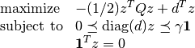
(with variables
 ), and its dual problem
), and its dual problem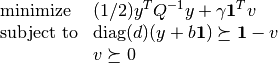
(with variables 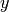, 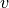, 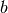).
The 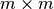 kernel matrix
 is given by
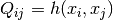 where
is given by
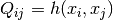 where  is a kernel function
and
is a kernel function
and  is the i’th row of the 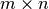 data
matrix
is the i’th row of the 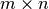 data
matrix  , and
, and  is an
is an  -vector with labels
(i.e.
-vector with labels
(i.e.  ). If is singular, we
replace 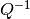 in the dual with its pseudo-inverse and add
a constraint 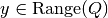.
). If is singular, we
replace 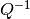 in the dual with its pseudo-inverse and add
a constraint 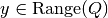.Valid kernel functions are:
- 'linear'
- the linear kernel: 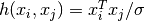
- 'poly'
- the polynomial kernel: 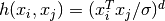
- 'rbf'
- the radial basis function:

- 'tanh'
- the sigmoid kernel: 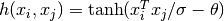
The kernel parameters
 , , and 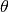
are specified using the input arguments sigma, degree, and theta,
respectively.
, , and 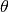
are specified using the input arguments sigma, degree, and theta,
respectively.softmargin() returns a dictionary with the following keys:
- 'classifier'
- a Python function object that takes an
 matrix with test vectors as rows and returns a vector with labels
matrix with test vectors as rows and returns a vector with labels - 'z'
- a sparse -vector
- 'cputime'
- a tuple (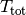, 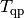, 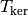) where is the total CPU time, is the CPU time spent solving the QP, and is the CPU time spent computing the kernel matrix
- 'iterations'
- the number of interior point iterations
- 'misclassified'
- a tuple (L1, L2) where L1 is a list of indices of misclassified training vectors from class 1, and L2 is a list of indices of misclassified training vectors from class 2
- softmargin_appr(X, d, gamma, width, kernel = 'linear', sigma = 1.0, degree = 1, theta = 1.0)¶
Solves the ‘soft-margin’ SVM problem
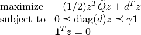
(with variables
), and its dual problem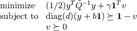
(with variables , , ).
The kernel matrix 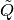 is the maximum determinant completion of the projection of Q on a band with bandwidth 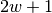. Here where
is one of the kernel functions defined under
softmargin() and is the i’th row of the
data matrix . The -vector
is a vector with labels (i.e. 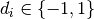). The half-bandwidth parameter 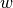 is set using the
input argument width.softmaring_appr() returns a dictionary that contains the same keys as the dictionary returned by softmargin(). In addition to these keys, the dictionary returned by softmargin_appr() contains an second classifier:
- 'completion classifier'
- a Python function object that
takes an matrix with test vectors as rows
and returns a vector with labels
Example 1¶
As a toy example, consider the following classification problem with
two (nonlinearly) separable classes. We use as training set
points in 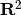 generated according to a uniform
distribution over the box  . We assign labels using the function
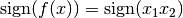, i.e., points
in the first and third quadrants belong to class 1 and points in the
second and fourth quadrants belong to class 2. We remark that in this
simple example, the degree 2 polynomial kernel can separate the two
classes.
. We assign labels using the function
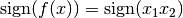, i.e., points
in the first and third quadrants belong to class 1 and points in the
second and fourth quadrants belong to class 2. We remark that in this
simple example, the degree 2 polynomial kernel can separate the two
classes.
The following Python code illustrates how to solve this classification problem using each of the two routines provided in SVMCMPL. In this example we solve a problem instance with 2,000 training points, and we use 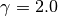 and the RBF kernel with 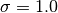.
import cvxopt, svmcmpl
m = 2000
X = 2.0*cvxopt.uniform(m,2)-1.0
d = cvxopt.matrix([2*int(v>=0)-1 for v in cvxopt.mul(X[:,0],X[:,1])],(m,1))
gamma = 2.0; kernel = 'rbf'; sigma = 1.0; width = 20
sol1 = svmcmpl.softmargin(X, d, gamma, kernel, sigma)
sol2 = svmcmpl.softmargin_appr(X, d, gamma, width, kernel, sigma)
Solving the standard (dense) SVM problem produced 445 support vectors, marked with white dots in the plot below:

The solid curve marks the decision boundry whereas the dashed curves are the -1 and +1 contours of 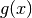 where 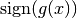 is the decision function.
Solving the approximation problem with half-bandwidth 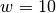 produced 1,054 support vectors.


In this example, the standard kernel classifier is clearly better than the completion kernel classifier at this bandwidth. Increasing the half-bandwidth to 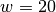 produced 467 support vectors.


Notice that both the standard kernel and completion kernel classifiers are now nearly identical to classifier obtained by solving the standard SVM QP.
Solving the dense SVM QP required 7.0 seconds whereas the approximation
QPs required 0.3 seconds and 0.7 seconds for and  , respectively.
, respectively.
Example 2¶
The following example demonstrates the approximate SVM method on the MNIST database of handwritten digits. In the example we use the Python module mnist.py to read the database files. The following code trains a binary classifier using as training set 4,000 examples of the digit ‘0’ as class 1 and 4,000 examples of the digit ‘1’ as class 2.
import mnist, svmcmpl, cvxopt, random
digits1 = [ 0 ]
digits2 = [ 1 ]
m1 = 4000; m2 = 4000
# read training data
images, labels = mnist.read(digits1 + digits2, dataset = "training", path = "data/mnist")
images = images / 256.
C1 = [ k for k in xrange(len(labels)) if labels[k] in digits1 ]
C2 = [ k for k in xrange(len(labels)) if labels[k] in digits2 ]
random.seed()
random.shuffle(C1)
random.shuffle(C2)
train = C1[:m1] + C2[:m2]
random.shuffle(train)
X = images[train,:]
d = cvxopt.matrix([ 2*(k in digits1) - 1 for k in labels[train] ])
gamma = 4.0
sol = svmcmpl.softmargin_appr(X, d, gamma, width = 50, kernel = 'rbf', sigma = 2**5)
In this example, both the standard kernel classifier and the completion kernel classifier misclassified 8 out of 2,115 test examples (digits ‘0’ and ‘1’ from the MNIST test set):